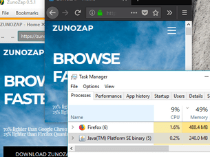

About ZunoZap
|
ZunoZap is a lite & fast web browser made for you. (Credits) Unlike other browsers ZunoZap uses a average of 400MB of RAM (Chrome 1GB, Edge 2GB, Firefox 700MB) ZunoZap includes: - Addon/Theme API - Built-in Adblock - Ultimate Privacy Protection & Data Saver - Modern - Lightweight |
ZunoZap was created on Jul 6, 2016. ZunoZap v0.1, the first beta release, was published on Mar 19, 2017.  The above screenshot shows ZunoZap using half of the system resources Firefox uses. |